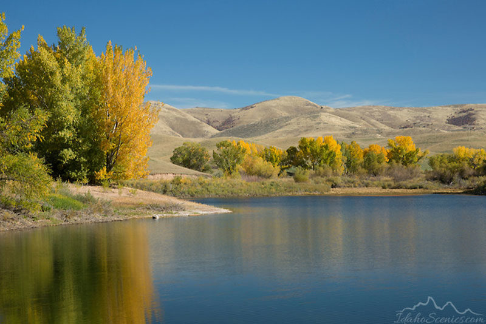
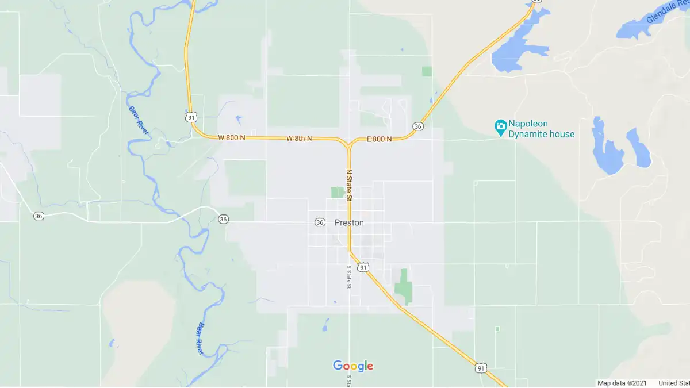

Saturday = Preston Pancakes in the Park! 9:00 a.m. Saturday at the city park pavilion.
active208.com
Local fun and udates!
Menu
Home
Preston
Soda Springs
Fish Haven
Storm Center
Gallery
The home of local Idaho cities!

Contact Us

123 w 456 n Preston, ID
208-521-5555
active208@gmail.com